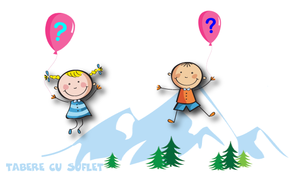

Foarte simplu. Intrati aici si completati formularul. In scurt timp veti primi pe mail detalii despre plata avansului precum si Contractul de sponsorizare pentru participarea la tabara. Dupa plata avansului si semnarea contractului, veti primi detalii despre program si bagaj, contractul si Fisa de Sanatate care cuprinde informatii despre sanatatea copilului si modul in care sa reactionam in caz de boala sau accident.
Avansul este de minim 500 lei (daca nu se specifica altfel) si trebuie platit cu doua luni inainte de inceperea taberei. Puteti plati si mai tarziu, insa pierdeti reducerea Early Booking si, in plus, exista posibilitatea sa nu mai gasiti locuri. Avansul nu este rambursabil.
Ne-am propus ca limita sa fie de 3 ani pentru ca de la aceasta varsta putem stabili o comunicare cu copilul, dar am avut copii si mai mici:) Instructorii nostri au experienta, rabdarea si dedicarea necesara pentru relationarea cu copii mici.
Si noi suntem parinti asa ca intelegem nevoia parintilor de a insoti copiii in tabara:)
Pentru a avea parte de o Tabara minunata, este bine sa cunoasteti cateva aspecte.
De stiut
Un prim aspect de care este bine sa tinem seama este ca cei mici interactioneaza si se dezvolta mai bine intr-un mediu in care nu se afla parinti, bunici, bone sau alti adulti insotitori. Invata sa schieze mai bine si mai repede, nu se alinta pe partie, se joaca si interactioneaza mai bine cu ceilati copii, invata sa aiba grija de ei si de lucrurile lor, intr-un cuvant, se dezvolta normal si ajung sa stea pe propriile picioare.
De asemenera, organizatorii taberei isi pot face mai bine treaba si, nu in ultimul rand, evitati si Dvs un cost suplimentar.
Un alt lucru de care va rugam sa tineti seama este ca simpla prezenta a unui parinte poate sa modifice echilibrul unei tabere. "Da' mamica mea de ce nu vine si ea?!" ne-a intrebat o data Daria, o fetita de 5 ani, care de la 3 ani venea deja singura in tabere, dupa ce a vazut-o pe mamica unui copil ce venise ca insotitor in tabara!
Puntea Increderii
Pentru a ne cunoaste inainte de tabara si pentru a va ajuta sa aveti increderea necesara ca sa puteti lasa copilul singur in tabara, am creat programul Puntea Increderii Mai multe detalii
Cazuri speciale
Bineinteles, exista si situatii speciale, in care copilul are nevoie de un insotitor in tabara.
In acest caz persoana insotitoare va sta cu copilul in camera si, in plus, pentru buna desfasurare a activitatilor, vor fi unele reguli ce vor trebui respectate.
Pentru ca prezenta unui adult poate avea un impact asupra altor copii din tabara, vom cere acordul celorlalti parinti.
Am creat mai multe oportunitati de a ne cunoaste, prin programul Puntea Increderii:
-
In primul rand aveti la indemana programul Weekend Activ, prin care organizam saptamanal iesiri cu copiii si cu adultii de cate o zi, la diferite activitati. Obiectivul programului este promovarea unui stil de viata sanatos. Pe langa acest obiectiv, ne propunem sa cunoastem copiii care urmeaza sa mearga in tabara si sa le oferim ocazia sa ne cunoasca si ei:)
Programul este afisat aici. Daca vreti sa veniti, va rugam sa va inscrieti aici.
- La unele tabere se organizeaza intalniri cu parintii copiilor care urmeaza sa mearga in tabara respectiva. Aceste intalniri sunt anuntate pe email, dupa inscriere.
- De asemenea, putem organiza o intalnire dedicata. In cazul in care considerati ca este cazul, va rugam sa ne anuntati.
Sigur ca da!
Prin programul WeCare Zambet pentru toti Copiii, oferim copiilor fara posibilitati materiale, posibilitatea sa participe la activitatile Tabere cu Suflet.
Va rugam sa intrati pe pagina programului si sa va inscrieti aici.
Depinde de tabara si de locul in care mergem. La Hotel sau la Pensiune suntem 2, 3 sau 4 in camera. Paturile sunt separate si nu sunt suprapuse. O exceptie ar fi Tabara "Pe Carari de Munte", in care doua nopti dormim la cort si la priciuri.
Lista cu ceea ce trebuie sa contina bagajul, precum si alte detalii specifice taberei, va fi transmisa pe email dupa confirmarea Inscrierii.
Nu incurajam tabletele si telefoanele, pentru ca activitatile pe care le facem sa fie cat mai interactive. In cazul in care totusi copiii au telefon sau tableta, ii vom ruga sa le lase in "Cutia cu Comori" cat sunt pe partie / la activitati, pentru a nu risca sa le piarda. Vor avea acces la ele seara, pentru a vorbi cu parintii.
Cel mai bun moment de vorbit cu copii este dupa ora 19:00, dar nu mai tarziu de 21:00, căci dam stingerea la aceasta ora.
Inainte de fiecare tabara va vom comunica mai multe numere de telefon unde puteti suna.
Pentru o comunicare cat mai facila am creat numarul special 0755 T A B E R E.
Asociatia Tabere cu Suflet nu are angajat un serviciu de secretariat, asa ca la acest numar raspundem noi, instructorii.
Cand suntem in tabere, atentia noastra este concentrata 100% pe copii.
Cu toate acestea, din respect pentru apelant, incercam sa raspundem chiar si cand suntem pe partie sau la alte activitati cu copiii.
In cazul in care ratam un apel, sunam noi in cel mai scurt timp posibil.
Daca aveti copilul in tabara si vreti sa vorbiti cu instructorii / supraveghetaorii, cel mai bine ar fi sa sunati dupa ora 9:30, cand se da stingerea.
Sigur ca da! Va rugam sa ne transmiteti prin mail, cu o luna inainte de inceperea taberei, regimul alimentar dorit.
Personalul care se ocupa de prepararea mancarii este foarte scrupulos, iar in multe tabere mancarea este Bio si provine de la fermele proprii.
Daca nu este anuntat in mod special, copilul nu are nevoie de bani de buzunar. Ca idee, noi nu promovam cumpararea de produse alimentare de la chioscuri. Daca doriti insa, puteti sa responsabilizati copilul, dandu-i o anumita suma de bani.
Deprinderile motrice se cristalizeaza pana pe la 5-6 ani si tot atunci copilul capata disciplina necesara pentru procesul de invatare.
Cu toate acestea copiii se pot urca pe schiuri de la varste foarte fragede, "de cand invata sa mearga" spune domnul profesor Nelu Cosma.
Iar copiii nostri, Sara si Ted, au urcat prima oara pe schiuri unul la 2 ani si celalalt la 3! 
Grupa normala este de 6-8 copii. La grupele de debutanti lucram cu 2-4 copii. In taberele din timpul vacantelor, grupele de avansati pot fi mai mari.
Sigur ca da, in limita locurilor disponibile, va asteptam cu drag:)
Mai multe detalii despre preturile pentru Scoala de Schi gasiti aici.
Sigur ca da:) Avem mai multe variante de cursuri de initiere sau perfectionare, inclusiv Indoor. Mai multe detalii gasiti aici.
Desigur! Daca preferati Snowboardingul, va asteptam in Tabara de Snowboard sau in grupele individuale. Uneori si in Taberele de Schi sunt grupe de Snowboard, insa pentru siguranta va rugam sa ne contactati.
Din pacate nu sta in puterea noastra sa controlam vremea, de aceea putem avea un an mai putin darnic in zapada:(
Pentru ca taberele de schi / snowboard depind de zapada, am creat un plan de backup in cazul in stratul nu este foarte gros iar partiile nu sunt suficient de albe.
In primul rand ne vom orienta catre o alta statiune cu mai multa zapada si vom merge acolo.
Daca nicio statiune din apropiere nu are zapada suficienta, tabara se va organiza cu un profil schimbat. Slava Domnului, pana acum nu a fost niciodata cazul:)
Desigur! In fiecare Tabara de Schi si Snowboard avem un centru de inchirieri cu care colaboram. Echipamentul de schi este compus din schiuri, clapari, bete, casca iar cel de snowboard din placa, boots si casca. Toate acestea se pot inchiria. La cerere, putem sa inchiriem si ochelari de schi. Pentru detalii legate de preturi, va rugam sa ne contactati.
Nu ati gasit raspunsul cautat? Va rugam sa ne Contactati si va ajutam cu drag!